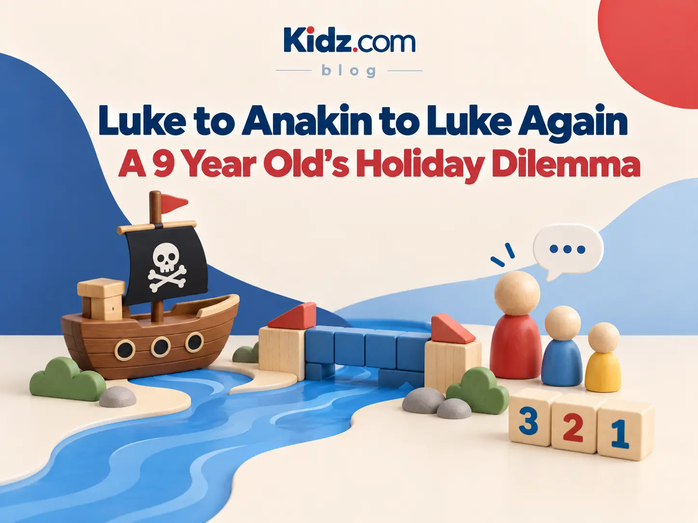

Growing through play
Luke to Anakin to Luke again
A nine-year-old’s holiday dilemma—and what mixed-age play can teach children about leading and belonging.

The first day of the Term 3 holidays, and we had ventured to the pirate park.
It’s got a pirate ship.
Kids love it.
As the kids played, I saw the most beautiful moment.
A nine-year-old boy, Luke*, was playing at the water-pump and river area with a group of younger boys.
He was leading them beautifully. They were damming the river, letting the water build up and then, when it was fit to burst, he led them with a countdown.
Three, two, one … let it go!
There isn’t anything much more exciting to a young boy than water flooding down a river.
They did this again and again.
Our little nine-year-old was in his element—encouraging the younger boys, guiding them and even being kind and empathetic when they stuffed up and let the water out too early.
What a beautiful little leader, growing in his skills.
Thirty minutes later, this same boy, Anakin*, was having a problem.
The small boys with small attention spans had wandered off to chase a bee.
Now a group of ten- to thirteen-year-olds were playing with the water with the same mission: build up the water and let it out all at once.
Because apparently boys don’t grow out of this.
And now our little Anakin was no young leader.
He was ruining it!
He would shout “Now!” and pull out the dam.
But the group wasn’t ready. They wanted the water to build up more.
“Stop, Anakin! No more! Just wait! You were the chosen one!”
Okay, that last one was me …
Now our little leader had to learn how to be part of the team of older kids.
And that requires different skills.
It’s a complex problem to solve.
At school, because of academic needs, kids are put with children their own age most of the time. The rest of life rarely works that way.
But one of the things we love about our little Kidz.com programme is that children have plenty of time playing in mixed-age groups.
This brings out the coolest opportunities.
When you are the younger child in a group, you get to learn from the older ones: getting introduced to new ideas, having new strategies and techniques modelled, and having bigger kids looking out for you.
When you are the older child in a group, you get to learn to lead, explain things at a simpler level, develop empathy and even learn to act on it.
And all of it has opportunities to go wrong.
But every time it goes wrong, it is a chance for that child to learn a new way of working with a new group of people.
Skills they will use later.
First job at New World.
University group assignment.
In-laws.
When they have their own children …
Playing with younger boys meant our young Luke* exercised some beautiful leadership skills. Playing with older boys meant our young Anakin* had to learn how to work in a team and not ruin the other kids’ work.
Afterwards, I talked to him, encouraged him in his win with the younger kids, listened to his frustrations about how it had gone wrong with the bigger kids, and gave him a couple of strategies for next time.
Later in the day, our Anakin* was back to Luke*—but now he was playing with the older group of boys.
He had worked it out.
In case you missed it, Luke* and Anakin* were the same boy. I couldn’t use his real name—that would be weird—so I used Star Wars names … naturally.